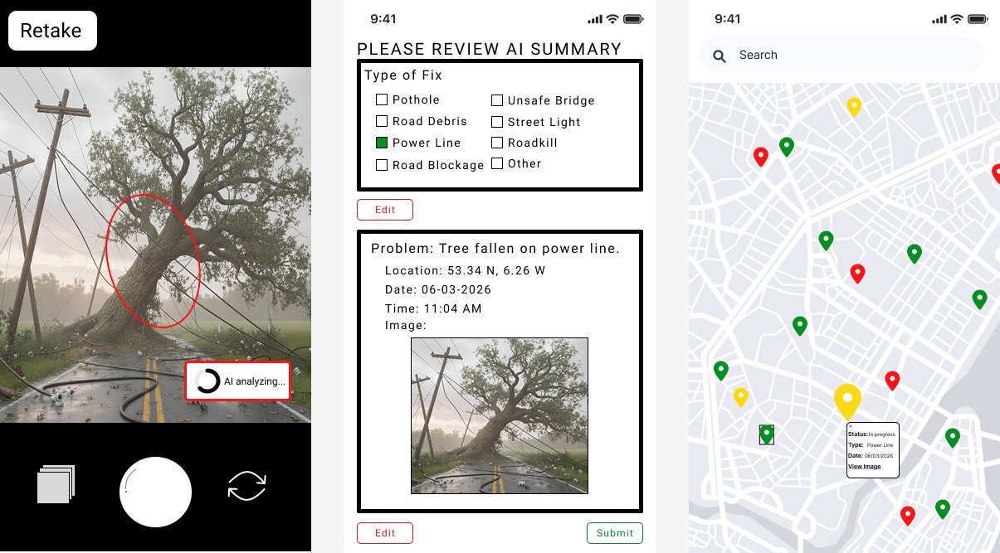

CivicFix, a proposed citizen reporting app that uses AI and GPS to make it effortless to report local infrastructure issues and track repairs in real time.
Citizens know when something is wrong in their neighborhood, but the systems in place to report it are outdated, hard to find or often lead nowhere. This erodes trust in local government and leaves real problems unfixed.
A mobile app where residents take a photo of any infrastructure issue. AI identifies the problem, GPS tags the location, and the report is automatically routed to the right department. Everyone can track progress on a live map.
Takes a photo, AI analyzes and highlights the problem, user confirms before submitting.
Report automatically sent to the correct agency, no need to know who handles what.
GPS pins the exact spot without any manual input. Editable if needed.
See all reported issues across the city with color-coded status: red, yellow, green.
Reporters get notified as their issue moves through the system, from submitted to resolved. Your voice actually matters.
Open the app, point at the issue, snap. That's it.
The system identifies the issue type, circles the affected area, and generates a summary. User confirms or re-analyzes.
The right government department receives a notification. Reports are listed by date or AI-assessed severity.
The department marks it "in progress" then "resolved." The pin on the public map updates in real time.
The person who filed the report receives updates at each stage. Resolved issues stay green on the map for one week.

CivicFix isn't a for-profit app, but it still creates clear, measurable value for municipalities and the communities they serve.
Municipal SaaS licensing. Cities pay to deploy the platform. A free pilot with one city generates real data to onboard others.
Competitors require manual categorization. CivicFix removes that friction entirely with AI detection and auto-routing.
Same core platform across city sizes. Can expand to parks, transit, graffiti removal, etc.. without rebuilding from scratch.
The tech is realistic because AI image analysis, GPS, and map tracking already exist in similar forms. The biggest challenge is adoption, since the app only works well if many people use it. A pilot city could help test usability and show real-world impact.
This app is meaningful because it addresses a real everyday problem that affects safety, quality of life, and trust in local government. By making it easier to report issues, it can help communities get repairs done faster and more efficiently, which improves both public infrastructure and the relationship between citizens and government.
The design focuses on making the reporting process simple and low-effort for the user. A person only needs to take a photo, while the app handles location tagging, issue detection, and routing in the background. It also keeps the user informed via status updates so that they can see what happens after they submit a report and leave feeling like their voice actually matters.
CivicFix scores high on both perceived usefulness and perceived ease of use, the two core drivers of adoption in TAM. Citizens get a meaningful way to fulfill their civic role, and the effort required is basically just taking a photo. Low barrier, high payoff.
The app gets more valuable as more people use it. Wide adoption means better coverage across a city, fewer duplicate reports, and more equal attention across neighborhoods. One person using it helps almost no one. A whole community using it changes how infrastructure is managed.
CivicFix could help surface issues in historically underserved communities, but it requires an internet connection. Low-broadband or rural areas may not be able to use it, meaning the app could actually widen the gap it is trying to close. Monitoring report coverage by neighborhood in the first year is critical to catching this early.
Team B3 / DAJA
Website development, content strategy, strategic analysis
Brainstorming lead, social theory research, poster design
UI/UX wireframing, app design, website development
Brainstorming lead, problem framing, poster design
We kicked things off together as a group, workshopping the concept and narrowing down the problem space collaboratively. From there, we split into lanes based on interest and skill, Anna and Arianne took ownership of the poster while Dylan and Jarrett focused on the website. Decisions were made as a team throughout, and we checked in regularly to make sure everything stayed aligned.